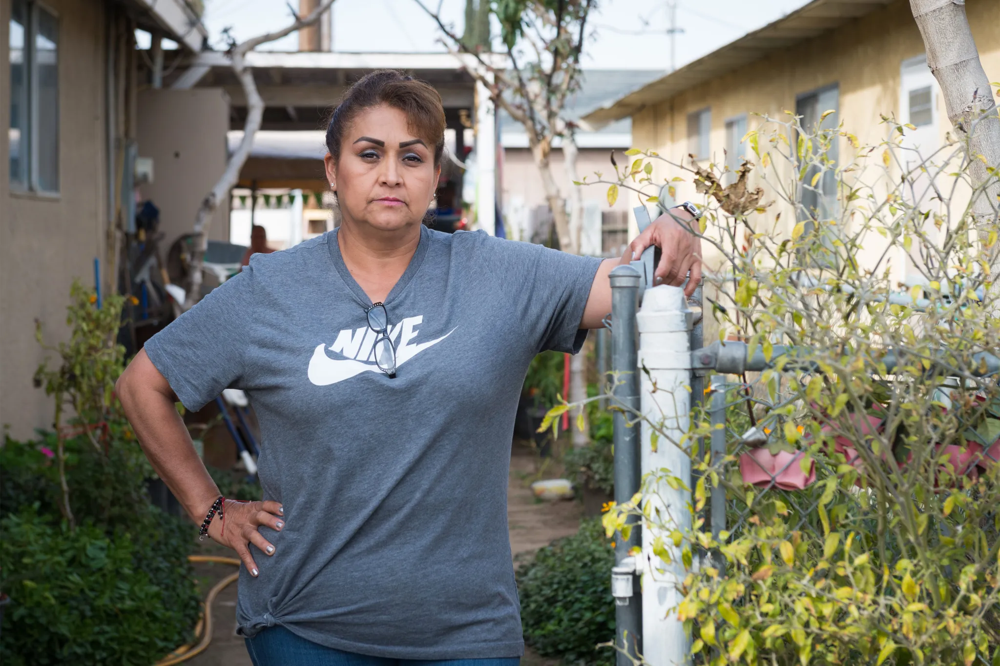

Lo que necesitas saber sobre el HEAL Act y cómo podría cambiar el panorama del acceso al aborto para inmigrantes
Para los niños migrantes que cruzan la frontera solos, les esperan nuevos desafíos para obtener atención médica
El estado emite directrices sobre los copagos para indocumentados, justo cuando los defensores se reunieron para criticar a Pritzker por recortes en atención médica
Proyecto de ley para expandir la cobertura a los migrantes podría poner a prueba la promesa de Newsom sobre la atención médica universal 